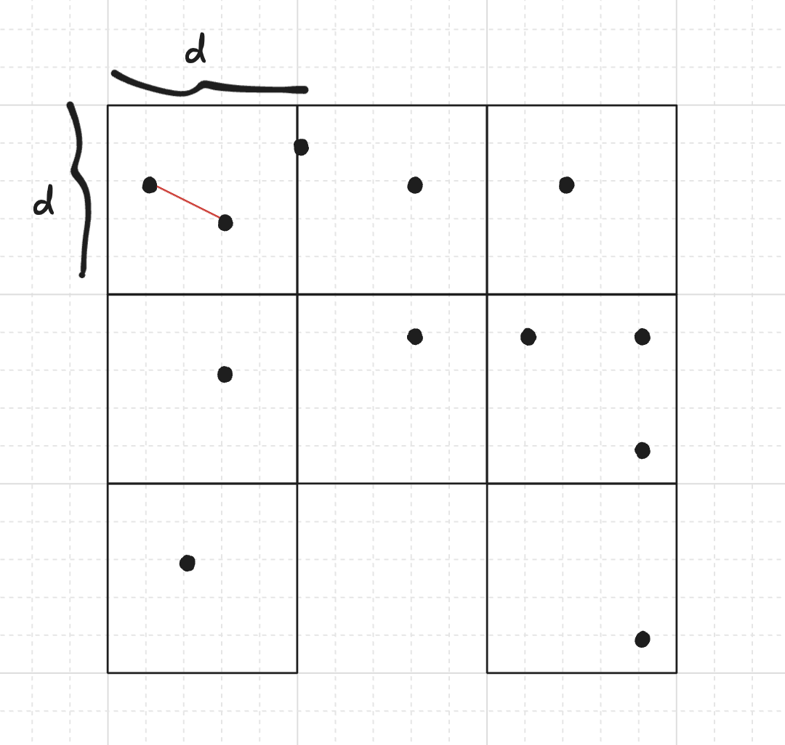

Tìm cặp điểm gần nhau nhất¶
Phát biểu bài toán¶
Cho $n$ điểm trên mặt phẳng. Mỗi điểm $p_i$ được xác định bởi tọa độ $(x_i,y_i)$. Hãy tìm hai điểm trong số đó sao cho khoảng cách giữa chúng là nhỏ nhất:
Ta dùng khoảng cách Euclid thông thường:
Thuật toán đơn giản duyệt mọi cặp và tính khoảng cách cho từng cặp có độ phức tạp $O(n^2)$.
Dưới đây là thuật toán chạy trong $O(n \log n)$. Thuật toán do Shamos và Hoey đề xuất năm 1975. (Nguồn: phần ghi chú chương 5 của Algorithm Design của Kleinberg & Tardos; xem thêm tại đây.) Preparata và Shamos cũng chứng minh thuật toán này là tối ưu trong mô hình cây quyết định.
Thuật toán¶
Ta xây dựng thuật toán theo khuôn mẫu chung của chia để trị: một hàm đệ quy nhận vào một tập điểm, chia tập đó thành hai nửa, gọi đệ quy trên mỗi nửa rồi thực hiện một số thao tác để kết hợp các đáp án. Bước kết hợp phải phát hiện trường hợp hai điểm của đáp án tối ưu nằm ở hai nửa khác nhau, vì hai lời gọi đệ quy riêng rẽ không thể phát hiện cặp này. Như thường gặp trong chia để trị, khó khăn chính là cài đặt hiệu quả bước gộp. Nếu hàm đệ quy nhận $n$ điểm, bước gộp phải chạy trong không quá $O(n)$; khi đó độ phức tạp $T(n)$ của toàn thuật toán được xác định bởi:
Nghiệm của phương trình này, như đã biết, là $T(n) = O(n \log n).$
Ta bắt đầu xây dựng thuật toán. Để sau này có thể cài đặt hiệu quả bước gộp, ta chia tập điểm thành hai tập con theo hoành độ $x$: trên thực tế, ta vẽ một đường thẳng đứng chia tập điểm thành hai tập có kích thước xấp xỉ bằng nhau. Một cách thuận tiện là sắp xếp các điểm theo thứ tự thông thường của các cặp số, tức là:
Sau khi sắp xếp, lấy điểm ở giữa $p_m (m = \lfloor n/2 \rfloor)$; mọi điểm trước nó cùng chính $p_m$ thuộc nửa thứ nhất, còn mọi điểm sau nó thuộc nửa thứ hai:
Ghi chú bản dịch: Cách chia trong phần mô tả đặt cả điểm giữa vào nửa đầu; với hai điểm, cách chia này không làm nhỏ bài toán. Code bên dưới chia tại chỉ số giữa theo hai đoạn nửa kín, nên hai nửa đều nhỏ hơn khi cần đệ quy.
Gọi đệ quy trên từng tập $A_1$ và $A_2$ để tìm các đáp án $h_1$ và $h_2$ tương ứng, rồi chọn đáp án tốt hơn: $h = \min(h_1, h_2)$.
Tiếp theo là bước gộp: ta tìm những cặp điểm có khoảng cách nhỏ hơn $h$, trong đó một điểm thuộc $A_1$ và điểm kia thuộc $A_2$. Rõ ràng chỉ cần xét các điểm cách đường thẳng đứng một khoảng nhỏ hơn $h$, tức là tập $B$ các điểm được xét ở bước này là:
Với mỗi điểm trong tập $B$, ta tìm các điểm cách nó ít hơn $h$. Chẳng hạn, chỉ cần xét những điểm có tọa độ $y$ chênh lệch không quá $h$. Hơn nữa, không cần xét những điểm có tọa độ $y$ lớn hơn tọa độ $y$ của điểm hiện tại. Vì vậy, với mỗi điểm $p_i$, ta định nghĩa tập điểm cần xét $C(p_i)$ như sau:
Nếu sắp xếp các điểm của $B$ theo tọa độ $y$, ta dễ dàng tìm được $C(p_i)$: đó là một số điểm liên tiếp đứng trước điểm $p_i$.
Theo ký hiệu mới, bước gộp được thực hiện như sau: tạo tập $B$, sắp xếp các điểm trong đó theo tọa độ $y$; sau đó, với mỗi điểm $p_i \in B$, xét mọi điểm $p_j \in C(p_i)$, tính khoảng cách của từng cặp $(p_i,p_j)$ và so sánh với khoảng cách tốt nhất hiện tại.
Thoạt nhìn, thuật toán này vẫn chưa tối ưu: có vẻ các tập $C(p_i)$ có kích thước cỡ $n$, khiến ta không đạt được độ phức tạp mong muốn. Tuy nhiên, có thể chứng minh kích thước mỗi tập $C(p_i)$ là $O(1)$, tức không vượt quá một hằng số nhỏ bất kể các điểm được bố trí ra sao. Chứng minh nằm ở phần tiếp theo.
Cuối cùng, xét các phép sắp xếp trong thuật toán: đầu tiên theo cặp $(x, y)$, sau đó sắp xếp các phần tử của $B$ theo $y$. Thực ra, cần loại bỏ cả hai phép sắp xếp bên trong hàm đệ quy; nếu không bước gộp sẽ không đạt $O(n)$ và độ phức tạp toàn thuật toán sẽ là $O(n \log^2 n)$. Phép sắp xếp đầu dễ xử lý: chỉ cần làm trước khi bắt đầu đệ quy, vì bản thân các phần tử không thay đổi. Phép thứ hai khó hơn và không thể thực hiện trước theo cách đó. Nhưng tương tự merge sort cũng dùng chia để trị, ta có thể lồng việc sắp xếp vào đệ quy. Hãy để lời gọi nhận một tập điểm (ban đầu được sắp theo cặp $(x, y)$) trả về chính tập đó nhưng đã sắp theo tung độ $y$. Chỉ cần gộp hai kết quả của các lời gọi đệ quy trong $O(n)$; ta thu được tập điểm đã sắp theo tọa độ $y$.
Đánh giá độ phức tạp¶
Để chứng minh thuật toán chạy trong $O(n \log n)$, ta cần chứng minh: $|C(p_i)| = O(1)$.
Xét một điểm $p_i$. Nhắc lại rằng $C(p_i)$ là tập các điểm có tọa độ $y$ nằm trong đoạn $[y_i-h; y_i]$; đồng thời, theo tọa độ $x$, bản thân $p_i$ và mọi điểm trong $C(p_i)$ đều nằm trong một dải rộng $2h$. Nói cách khác, $p_i$ và $C(p_i)$ nằm trong một hình chữ nhật kích thước $2h \times h$.
Ta cần đánh giá số điểm lớn nhất có thể nằm trong hình chữ nhật $2h \times h$ này, từ đó chặn kích thước của $C(p_i)$. Khi đánh giá, cần nhớ rằng các điểm có thể trùng nhau.
Nhắc lại rằng $h$ được lấy từ kết quả hai lời gọi đệ quy trên $A_1$ và $A_2$. Tập $A_1$ gồm các điểm bên trái đường chia và một phần điểm trên đường đó; $A_2$ gồm các điểm còn lại trên đường chia và những điểm bên phải. Khoảng cách giữa hai điểm bất kỳ cùng thuộc $A_1$ hoặc cùng thuộc $A_2$ không thể nhỏ hơn $h$, nếu không hàm đệ quy đã trả về kết quả sai.
Để chặn số điểm trong hình chữ nhật $2h \times h$, ta chia nó thành hai hình vuông $h \times h$. Hình thứ nhất chứa mọi điểm trong $C(p_i) \cap A_1$, hình thứ hai chứa các điểm còn lại, tức $C(p_i) \cap A_2$. Theo lập luận trên, trong mỗi hình vuông, khoảng cách giữa hai điểm bất kỳ ít nhất là $h$.
Ta chứng minh mỗi hình vuông chứa không quá bốn điểm. Chẳng hạn, chia hình vuông thành $4$ hình vuông con cạnh $h/2$. Mỗi hình vuông con chứa không quá một điểm, vì ngay cả đường chéo của nó cũng bằng $h / \sqrt{2}$, nhỏ hơn $h$. Do đó, toàn bộ hình vuông chứa không quá $4$ điểm.
Vậy trong hình chữ nhật $2h \times h$ có không quá $4 \cdot 2 = 8$ điểm, và do đó kích thước của $C(p_i)$ không vượt quá $7$, như cần chứng minh.
Ghi chú bản dịch: Theo định nghĩa ở trên, tập đang xét có thể chứa chính điểm hiện tại; cận bảy áp dụng cho các điểm khác điểm hiện tại. Phần cài đặt chỉ kiểm tra các điểm đã được duyệt trước đó.
Cài đặt¶
Ta định nghĩa cấu trúc lưu một điểm (tọa độ và số thứ tự), cùng các phép so sánh cần cho hai kiểu sắp xếp:
struct pt {
int x, y, id;
};
struct cmp_x {
bool operator()(const pt & a, const pt & b) const {
return a.x < b.x || (a.x == b.x && a.y < b.y);
}
};
struct cmp_y {
bool operator()(const pt & a, const pt & b) const {
return a.y < b.y;
}
};
int n;
vector<pt> a;
Để thuận tiện cho việc cài đặt đệ quy, ta tạo hàm phụ upd_ans(), tính khoảng cách giữa hai điểm và kiểm tra xem nó có tốt hơn đáp án hiện tại không:
double mindist;
pair<int, int> best_pair;
void upd_ans(const pt & a, const pt & b) {
double dist = sqrt((a.x - b.x)*(a.x - b.x) + (a.y - b.y)*(a.y - b.y));
if (dist < mindist) {
mindist = dist;
best_pair = {a.id, b.id};
}
}
Ghi chú bản dịch: Trong code trên, các phép trừ và nhân tọa độ được thực hiện bằng kiểu số nguyên trước khi chuyển kết quả sang số thực. Với tọa độ đủ lớn, các phép tính này có thể tràn; cần giới hạn miền tọa độ hoặc chuyển sang kiểu đủ rộng trước khi tính.
Tiếp theo là cài đặt hàm đệ quy. Giả sử trước khi gọi hàm, mảng $a[]$ đã được sắp theo hoành độ $x$. Mỗi lời gọi nhận hai chỉ số $l, r$, cho biết cần tìm đáp án trên $a[l \ldots r)$. Nếu khoảng cách giữa $r$ và $l$ quá nhỏ, dừng đệ quy, dùng thuật toán đơn giản để tìm cặp gần nhất rồi sắp xếp đoạn con theo tung độ $y$.
Để gộp hai tập điểm nhận từ các lời gọi đệ quy thành một tập có thứ tự theo tung độ $y$, ta dùng hàm STL $merge()$ và tạo bộ đệm phụ $t[]$ dùng chung cho mọi lời gọi. (Dùng inplace_merge () không thực tế vì nói chung hàm đó không chạy trong thời gian tuyến tính.)
Cuối cùng, tập $B$ được lưu ngay trong mảng $t$.
vector<pt> t;
void rec(int l, int r) {
if (r - l <= 3) {
for (int i = l; i < r; ++i) {
for (int j = i + 1; j < r; ++j) {
upd_ans(a[i], a[j]);
}
}
sort(a.begin() + l, a.begin() + r, cmp_y());
return;
}
int m = (l + r) >> 1;
int midx = a[m].x;
rec(l, m);
rec(m, r);
merge(a.begin() + l, a.begin() + m, a.begin() + m, a.begin() + r, t.begin(), cmp_y());
copy(t.begin(), t.begin() + r - l, a.begin() + l);
int tsz = 0;
for (int i = l; i < r; ++i) {
if (abs(a[i].x - midx) < mindist) {
for (int j = tsz - 1; j >= 0 && a[i].y - t[j].y < mindist; --j)
upd_ans(a[i], t[j]);
t[tsz++] = a[i];
}
}
}
Nếu mọi tọa độ đều nguyên, trong quá trình đệ quy ta có thể tránh dùng số thực và lưu bình phương khoảng cách nhỏ nhất trong $mindist$.
Trong chương trình chính, gọi hàm đệ quy như sau:
t.resize(n);
sort(a.begin(), a.end(), cmp_x());
mindist = 1E20;
rec(0, n);
Các thuật toán ngẫu nhiên tuyến tính¶
Thuật toán ngẫu nhiên có thời gian kỳ vọng tuyến tính¶
Một phương pháp khác do Rabin đề xuất năm 1976 xuất phát từ ý tưởng heuristic đơn giản để cải thiện thời gian chạy: chia mặt phẳng thành lưới các hình vuông $d \times d$; khi đó chỉ cần kiểm tra khoảng cách giữa các điểm cùng ô hoặc ở các ô kề nhau (trừ khi mọi ô đều tách rời nhau, nhưng ta sẽ tránh trường hợp đó bằng cách xây dựng), vì mọi cặp khác có khoảng cách lớn hơn hai điểm trong cùng một ô.

Ta chỉ xét các ô vuông chứa ít nhất một điểm. Gọi $n_1, n_2, \dots, n_k$ là số điểm trong mỗi ô trong số $k$ ô còn lại. Giả sử có ít nhất hai điểm trong cùng một ô hoặc trong hai ô kề nhau và không có điểm trùng lặp, độ phức tạp là $\Theta\!\left(\sum\limits_{i=1}^k n_i^2\right)$. Có thể tìm điểm trùng bằng bảng băm trong thời gian kỳ vọng tuyến tính; nếu tìm thấy, cặp đó là đáp án.
Chứng minh
Với ô thứ $i$ chứa $n_i$ điểm, số cặp bên trong là $\Theta(n_i^2)$. Nếu ô thứ $i$ kề ô thứ $j$, ta còn thực hiện $n_i n_j \le \max(n_i, n_j)^2 \le n_i^2 + n_j^2$ phép so sánh khoảng cách. Mỗi ô có tối đa $8$ ô kề, nên tổng số phép so sánh được chặn bởi $\Theta(\sum_{i=1}^{k} n_i^2)$. $\quad \blacksquare$
Bây giờ ta cần quyết định cách chọn $d$ sao cho $\Theta\!\left(\sum\limits_{i=1}^k n_i^2\right)$ nhỏ nhất.
Chọn d¶
Ta cần $d$ xấp xỉ khoảng cách nhỏ nhất $d$. Richard Lipton đề xuất lấy mẫu ngẫu nhiên $n$ khoảng cách và chọn $d$ là khoảng cách nhỏ nhất trong số đó để xấp xỉ $d$. Ta sẽ chứng minh thời gian chạy kỳ vọng của thuật toán là tuyến tính.
Chứng minh
Xét cách bố trí điểm trong các ô khi chọn $d$ bằng một giá trị cụ thể, chẳng hạn $x$. Xem $d$ là biến ngẫu nhiên thu được từ việc lấy mẫu khoảng cách. Định nghĩa $C(x) := \sum_{i=1}^{k(x)} n_i(x)^2$ là ước lượng chi phí cho cách bố trí khi chọn $d=x$. Tiếp theo, định nghĩa $\lambda(x)$ sao cho $C(x) = \lambda(x) \, n$. Xác suất giá trị $x$ này còn được giữ lại sau khi lấy mẫu $n$ khoảng cách độc lập là bao nhiêu? Nếu một cặp được lấy mẫu có khoảng cách nhỏ hơn $x$, cách bố trí này sẽ được thay bằng giá trị $d$ nhỏ hơn. Trong một ô, khoảng $1/16$ số cặp cho khoảng cách nhỏ hơn (chia mỗi ô thành bốn ô con; theo nguyên lý Dirichlet, có ít nhất một ô con chứa $n_i/4$ điểm), nên có khoảng $\sum_{i=1}^{k} {n_i/4 \choose 2} \approx \sum_{i=1}^{k} \frac{1}{16} {n_i \choose 2}$ cặp cho giá trị $d$ cuối cùng nhỏ hơn. Con số này xấp xỉ $\frac{1}{32} \sum_{i=1}^{k} n_i^2 = \frac{1}{32} \lambda(x) n$. Mặt khác, có khoảng $\frac{1}{2} n^2$ cặp có thể được lấy mẫu. Xác suất lấy được một cặp có khoảng cách nhỏ hơn $x$ ít nhất xấp xỉ là
vì vậy xác suất chọn được ít nhất một cặp như thế trong $n$ lượt (và do đó tìm được $d$ nhỏ hơn) là
(ta đã dùng $(1 + x)^n \le e^{xn}$ với mọi số thực $x$; xem bất đẳng thức Bernoulli).
Xác suất này tiến tới $1$ theo hàm mũ khi $\lambda(x)$ tăng. Điều đó gợi ý rằng $\lambda$ sẽ nhỏ với một giá trị $d$ được chọn kém.
Ta đã chỉ ra $\Pr(d \le x) \ge 1 - e^{-\lambda(x)/16}$, hay tương đương $\Pr(d \ge x) \le e^{-\lambda(x)/16}$. Để ước lượng kỳ vọng, ta cần biết $\Pr(\lambda(d) \ge \text{something})$. Ta nhận thấy $\lambda(d) \ge \lambda(x) \iff d \ge x$. Lý do là thu nhỏ các ô chỉ làm giảm số điểm trong mỗi ô (chia các điểm sang các ô khác), và do đó liên tục làm giảm tổng các bình phương. Vì vậy,
(ta đã dùng $E[X] = \int_0^{+\infty} \Pr(X \ge x) \, \mathrm{d}x$; xem chứng minh trên Stack Exchange).
Cuối cùng, $\mathbb{E}[C(d)] = \mathbb{E}[\lambda(d) \, n] \le 16n$ và thời gian chạy kỳ vọng là $O(n)$ với hệ số hằng hợp lý. $\quad \blacksquare$
Ghi chú bản dịch: Lập luận về tính đơn điệu của chi phí lưới ở trên cần được xem xét lại: khi đổi kích thước ô, các ranh giới cũng thay đổi và các ô mới không nhất thiết chỉ là hợp của các ô cũ. Chẳng hạn, trên cùng một hàng, hai điểm có hoành độ 2 và 3 nằm cùng ô khi cạnh ô bằng 2, nhưng nằm ở hai ô khác nhau khi cạnh ô bằng 2,5. Do đó bước suy ra tính đơn điệu trong bài nguồn chưa được chứng minh bởi lập luận này.
Cài đặt thuật toán¶
Ưu điểm của thuật toán là cài đặt đơn giản nhưng vẫn có hiệu năng tốt trong thực tế. Trước tiên lấy mẫu $n$ khoảng cách và đặt $d$ bằng khoảng cách nhỏ nhất. Sau đó đưa các điểm vào các "ô" bằng bảng băm ánh xạ tọa độ hai chiều tới vector các điểm. Cuối cùng chỉ cần tính khoảng cách giữa các cặp điểm cùng ô và ở các ô kề nhau. Mỗi thao tác bảng băm có chi phí kỳ vọng $O(1)$, vì vậy thuật toán vẫn có thời gian kỳ vọng $O(n)$ với hệ số hằng lớn hơn.
Xem bài nộp này trên Library Checker.
#include <bits/stdc++.h>
using namespace std;
using ll = long long;
using ld = long double;
struct pt {
ll x, y;
pt() {}
pt(ll x_, ll y_) : x(x_), y(y_) {}
void read() {
cin >> x >> y;
}
};
bool operator==(const pt& a, const pt& b) {
return a.x == b.x and a.y == b.y;
}
struct CustomHashPoint {
size_t operator()(const pt& p) const {
static const uint64_t C = chrono::steady_clock::now().time_since_epoch().count();
return C ^ ((p.x << 32) ^ p.y);
}
};
ll dist2(pt a, pt b) {
ll dx = a.x - b.x;
ll dy = a.y - b.y;
return dx*dx + dy*dy;
}
pair<int,int> closest_pair_of_points(vector<pt> P) {
int n = int(P.size());
assert(n >= 2);
// if there is a duplicated point, we have the solution
unordered_map<pt,int,CustomHashPoint> previous;
for (int i = 0; i < int(P.size()); ++i) {
auto it = previous.find(P[i]);
if (it != previous.end()) {
return {it->second, i};
}
previous[P[i]] = i;
}
unordered_map<pt,vector<int>,CustomHashPoint> grid;
grid.reserve(n);
mt19937 rd(chrono::system_clock::now().time_since_epoch().count());
uniform_int_distribution<int> dis(0, n-1);
ll d2 = dist2(P[0], P[1]);
pair<int,int> closest = {0, 1};
auto candidate_closest = [&](int i, int j) -> void {
ll ab2 = dist2(P[i], P[j]);
if (ab2 < d2) {
d2 = ab2;
closest = {i, j};
}
};
for (int i = 0; i < n; ++i) {
int j = dis(rd);
int k = dis(rd);
while (j == k) k = dis(rd);
candidate_closest(j, k);
}
ll d = ll( sqrt(ld(d2)) + 1 );
for (int i = 0; i < n; ++i) {
grid[{P[i].x/d, P[i].y/d}].push_back(i);
}
// same block
for (const auto& it : grid) {
int k = int(it.second.size());
for (int i = 0; i < k; ++i) {
for (int j = i+1; j < k; ++j) {
candidate_closest(it.second[i], it.second[j]);
}
}
}
// adjacent blocks
for (const auto& it : grid) {
auto coord = it.first;
for (int dx = 0; dx <= 1; ++dx) {
for (int dy = -1; dy <= 1; ++dy) {
if (dx == 0 and dy == 0) continue;
pt neighbour = pt(
coord.x + dx,
coord.y + dy
);
for (int i : it.second) {
if (not grid.count(neighbour)) continue;
for (int j : grid.at(neighbour)) {
candidate_closest(i, j);
}
}
}
}
}
return closest;
}
Một thuật toán ngẫu nhiên khác có thời gian kỳ vọng tuyến tính¶
Ta giới thiệu một thuật toán ngẫu nhiên khác, ít thực tế hơn nhưng rất dễ chứng minh có thời gian chạy kỳ vọng tuyến tính.
- Hoán vị ngẫu nhiên $n$ điểm
- Lấy $\delta := \operatorname{dist}(p_1, p_2)$
- Chia mặt phẳng thành các ô vuông cạnh $\delta/2$
- Với $i = 1,2,\dots,n$:
- Lấy ô vuông tương ứng với $p_i$
- Duyệt $25$ ô cách ô đó tối đa hai bước trong lưới
- Nếu có điểm $p_j$ trong các ô đó thỏa $\operatorname{dist}(p_j, p_i) < \delta$, thì
- Tính lại cách chia mặt phẳng và các ô với $\delta := \operatorname{dist}(p_j, p_i)$
- Lưu các điểm $p_1, \dots, p_i$ vào các ô tương ứng
- Ngược lại, lưu $p_i$ vào ô tương ứng
- Xuất $\delta$
Ghi chú bản dịch: Nếu phát hiện hai điểm trùng nhau, khoảng cách nhỏ nhất bằng không và có thể trả lời ngay; không thể chia mặt phẳng thành các ô có cạnh bằng không như mô tả ở trên. Khi xét một điểm mới, cần tìm khoảng cách nhỏ nhất trong toàn bộ các ứng viên đã xét trước khi dựng lại lưới. Nếu chỉ lấy một ứng viên gần hơn bất kỳ, chẳng hạn với ba điểm có hoành độ lần lượt là 0, 10 và 4 trên cùng một đường thẳng, ta có thể chọn khoảng cách 6 thay vì khoảng cách nhỏ nhất là 4.
Tính đúng đắn suy ra từ việc tại mọi thời điểm ta đã có một cặp cách nhau $\delta$, nên chỉ cần tìm các cặp mới có khoảng cách nhỏ hơn $\delta$. Vì mỗi ô có cạnh $\delta/2$, một cặp ứng viên chỉ có thể cách nhau nhiều nhất $2$ ô; do đó, với mỗi điểm ta kiểm tra các ứng viên trong $25$ ô xung quanh. Mọi điểm trong ô xa hơn luôn có khoảng cách lớn hơn $\delta$.
Dù thuật toán có vẻ chậm vì tính lại mọi thứ nhiều lần, ta có thể chứng minh tổng chi phí kỳ vọng là tuyến tính.
Chứng minh
Gọi $X_i$ là biến ngẫu nhiên bằng $1$ khi điểm $p_i$ làm thay đổi $\delta$ và khiến các cấu trúc dữ liệu phải tính lại, và bằng $0$ trong trường hợp ngược lại. Dễ thấy chi phí là $O(n + \sum_{i=1}^{n} i X_i)$, vì ở bước thứ $i$ ta chỉ xét $i$ điểm đầu tiên. Tuy nhiên, $\Pr(X_i = 1) \le \frac{2}{i}$. Đó là vì ở bước thứ $i$, $\delta$ là khoảng cách của cặp điểm gần nhất trong $\{p_1,\dots,p_i\}$, còn $\Pr(X_i = 1)$ là xác suất $p_i$ thuộc cặp gần nhất; điều này chỉ xảy ra ở $2(i-1)$ cặp trong số $i(i-1)$ cặp có thể (giả sử mọi khoảng cách đều khác nhau). Do đó xác suất không quá $\frac{2(i-1)}{i(i-1)} = \frac{2}{i}$, vì trước đó ta đã hoán vị đều ngẫu nhiên các điểm.
Vậy chi phí kỳ vọng là
Mở rộng: tìm tam giác có chu vi nhỏ nhất¶
Thuật toán trên có một mở rộng thú vị cho bài toán sau: trong một tập điểm, chọn ba điểm khác nhau sao cho tổng khoảng cách từng đôi một giữa chúng là nhỏ nhất.
Thực ra, thuật toán vẫn tương tự: chia mặt phẳng thành hai nửa bằng một đường thẳng đứng, giải đệ quy trên mỗi nửa, chọn giá trị nhỏ nhất $minper$ trong các chu vi tìm được, tạo một dải dày $minper / 2$ rồi duyệt mọi tam giác có thể cải thiện đáp án. (Lưu ý tam giác có chu vi $\le minper$ có cạnh dài nhất $\le minper / 2$.)
Bài tập¶
- UVA 10245 "The Closest Pair Problem" [difficulty: low]
- SPOJ #8725 CLOPPAIR "Closest Point Pair" [difficulty: low]
- CODEFORCES Team Olympiad Saratov - 2011 "Minimum amount" [difficulty: medium]
- Google CodeJam 2009 Final "Min Perimeter" [difficulty: medium]
- SPOJ #7029 CLOSEST "Closest Triple" [difficulty: medium]
- TIMUS 1514 National Park [difficulty: medium]